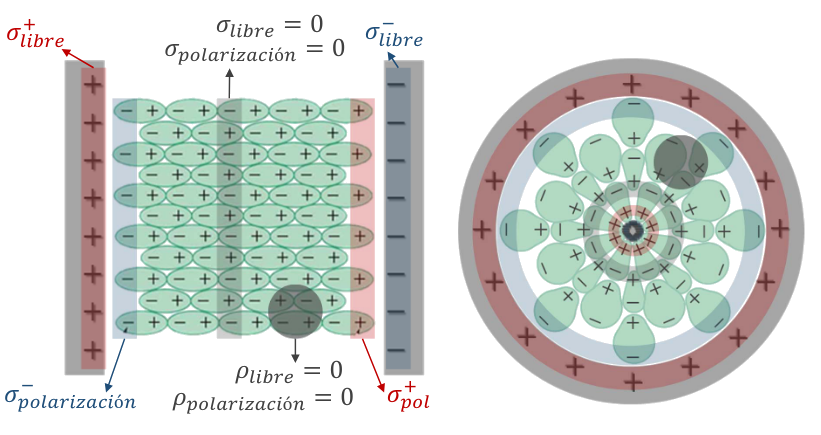

- En presencia de un pequeño campo eléctrico, permiten el movimiento libre de electrones.
Aislantes (dieléctricos)
- En presencia de un pequeño campo eléctrico, no permiten el movimiento libre de electrones.
\(Pila\): impone una diferencia de potencial entre 2 puntos.
- Las cargas se mueven hasta que se cumple el potencial impuesto. (No se crea ni se destruye carga)
Método para hallar la carga y polaridad de cada capacitor en el estado estacionario.
- Malla: camino cerrado donde se cumple: \(\oint dV = \oint \vec E \cdot d\vec l = 0\)
- Isla: porción del circuito donde se cumple: \( q_{inicial}^{neta} = q_{final}^{neta}\)
De cada isla y malla sacamos una ecuación.
- Asignar (arbitrariamente) la polaridad de cada capacitor e indicarla en el esquema.
- Elegir (arbitrariamente) un sentido de circulación para cada malla (indicarlo).
- Elegir (arbitrariamente) dónde comenzar a circular las mallas.
- Plantear las ecuaciones de mallas e islas necesarias y resolver el sistema.
-
Si la carga de un capacitor resultó ser:
- positiva, entonces la polaridad del capacitor es la indicada en el esquema.
- negativa, entonces la polaridad del capacitor es contraria a la indicada en el esquema.
“Libres”: puede haber tanto en el vacío, como en materiales conductores, e incluso en dieléctricos
- En dieléctricos las cargas libres, no son libres en el sentido de “móviles”, sino “en exceso”.
De polarización:
- solo puede haber en materiales dieléctricos (ni en el vacío, ni en conductores). Siempre es nula la carga neta de polarización de un material dieléctrico.
- La densidad de carga polarizada es el vector \(\vec P\) en ese punto por la normal (versor) saliente del dieléctrico.
- \(\sigma_{p} = \vec P |_{sup} \hat n_{saliente}\), por lo que \( \sigma_p S = Q_p\)
- \(\rho_{p} = -\vec \nabla \cdot \vec P\), solo existe si la carga está dentro del dieléctrico.

Campo eléctrico \(\vec E\)
- El flujo depende de las cargas de polarización y las libres.
Campo vector de polarización: \(\vec P = \frac{\partial \vec p}{\partial Vol}\), momento dipolar eléctrico por unidad de volumen.
- \(\vec P\) nulo en el vacío. (no hay moleculas polarizadas)
- Nace en las cargas de polarización negativas y muere en las positivas.
- El flujo depende solo de las cargas de polarización.
Campo vector de desplazamiento: Campo auxiliar \(\vec D = \epsilon_0 \vec E + \vec P\)
- Nace en las cargas libres positivas y muere en las negativa
- El flujo solo depende de las cargas libres.